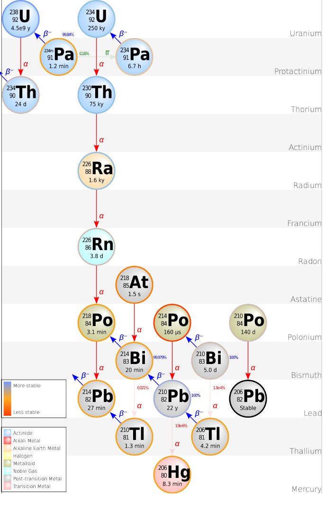

About neutrino masses
Contents
About neutrino masses#
import time
print(' Last version ', time.asctime() )
Last version Mon Feb 13 17:46:36 2023
# general imports
%matplotlib inline
%reload_ext autoreload
%autoreload 2
# numpy and matplotlib
import numpy as np
import pandas as pd
import matplotlib.pyplot as plt
import scipy.stats as stats
import scipy.constants as units
plt.style.context('seaborn-colorblind');
About
About the masses of Dirac Fermions. The appereance of the maxing matrix
About the basic of Majorana neutrinos.
The Degenerancy between leptonic, helicity and chirality in the low mass regime.
About Majorana masses.
The See-Saw Mechanisme and the Weinberg operator
Search for the N Majorana neutrinos
Dirac masses. The appareance of the mixing matrix#
No mass. Neutrinos as a Weyld spinor#
The Dirac equation translates to two coupled equations, expressed in terms of the quirality fields,
They decouple if \(m = 0\).
In the 60’s, Landau, Lee-Yand and Salam, from the V-A interaccions of the weak decays, and the almost null, non-observed mass of the neutrino, postulated that \(m_\nu = 0\), and therefore only one field \(\nu_L\) was needed in the SM to describe the neutrino interactions.
One family#
We can introduce a Dirac mass term introducing a sterile field \(\nu_R\) that couples with the Higgs conjugate \(\tilde{\Phi}\). The mass term in the lagrangian is:
That after SSB, we obtain the mass term:
And we encounter the un-natural fact that \(\lambda^\nu \ll \lambda^e\). Or in other words, why the neutrino mass is so small compared with the other fermion masses if the mechanims that provides mass to the neutrinos is the same than works for electrons?
Three families#
Consider the three families lepton flavour states, \(l'_\alpha,\nu'_\alpha, \; i=e,\mu,\tau\), the left-chiral components doublets \(L'_\alpha\) and the right-chiral singlets \(l'_R\), including \(\nu'_{\alpha, R}\)
The most general Dirac mass lagrangian via de complex Yukawa couplings with the Higgs doublet \(\Phi\) and its conjugate \(\tilde{\Phi}\):
Notice that we couple the different doublets \(L_{\alpha}\) with the singles \(l_{\alpha R}, \, \nu_{\alpha R}\)
After SSB: $\( -\mathcal{L}_m = \frac{v}{\sqrt{2}} \left( {\bf \lambda}_l \bar{{\bf l}}'_L {\bf l'}_R + \lambda_\nu \bar{{\bf \nu}}'_L {\bf \nu}'_R + \mathrm{h.c.} \right) \)$
where \(\lambda_l, \, \lambda_\nu\) are \(3\times3\) complex matrices, kown as Yukawa. And
There is a theorem that says that a complex matrix \(Y\) can be written as, \(Y = H U\), where \(H\) es hermitian and \(U\) unitary, and as a corollary, \(Y = U^\dagger M V\), where \(U, V\) are unitary and \(M\) es diagonal, with non-zero, possitive elements.
Therefore, the \(\frac{v}{\sqrt{2}}\lambda_k\) matrix can be diagonalized with real values in the diagonal, \(M_k\) via a bi-unitary transformation \(V_k, \,U_h\), with \(k = l, \, \nu\):
And we can relate the weak states to the mass states via:
And the mass part of the lagrangian:
This does not affect the NC of the lagrangian:
But it does the CC lagrangian:
where:
Is the unitary matrix that mix the neutrino flavour and mass states, known ad Pontecorbo-Maki-Nakawaga-Sakata matrix, responsible of the neutrino oscillations.
This a unitary \(3\times3\) matrix has \(9\) parameters, \(3\) mixing angles, and \(6\) phases.
But we can use the global symmetries of the Dirac fields to re-absorbe the some phases of \(U\):
With \(\alpha = e, \mu, \tau\) and \(i = 1, 2, 3\).
The CC lagrangian is:
We can take out a global factor that does not affect the physics:
In total we can reabsorb \(5\) phases. Therefore there is only one phase left in \(U\), that is, the CP-violation phase, \(\delta_{CP}\).
The usual parameterization of \(U_{PMNS}\) in terms of 3 angles and one CP-phase:
{kind=link}
The \(U\) mixing matrix still preserves the lepton number, as we can take a global phase in all the fermions at the same time.
and the interaction and the mass lagrangian terms are invariant.
But the family lepton number is nor preserved.
As the transformation, of only one family
Will not affect the interaction term, but the mass terms!
Majorana neutrinos#
Majorana in the 30’s discover that a solution of the Dirac equation was possible, without negative energy states, for neutral particles [Maj]
{kind=link}
“We show that it is possible to achieve complete formal symmetrization in the electron and positron quantum theory by means of a new quantization process. The meaning of Dirac equations is somewhat modified and it is no more necessary to speak of negative-energy states; nor to assume, for any other type of particles, especially neutral ones, the existence of antiparticles, corresponding to the `holes’ of negative energy.”
In Dirac Matrices in Majorana representation are imaginary, therefore the Dirac equation:
decouples for the real, \(\Psi_{\mathcal{R}}\) and imaginary part of the field, \(\Psi_{\mathcal{I}}\), that is, \(\Psi = \Psi_{\mathcal{R}} + \Psi_{\mathcal{I}}\)
The charge conjungation operations is defined as:
Where \(C\) is the change conjugation matrix, in any representation, it fulfills:
In the case \(\gamma^0\) is hermitial and \(\gamma^k\) anti-hermitian, is taken as real, antisymmetric and unitary:
That is the case for the Pauli-Dirac, Weyl-chiral, and Majorana representations
In the Pauli-Dirac representation:
In the Weyl-chiral representation:
In the Majorana representation:
If we define the Majorana spinor, \(\Psi^M\), as:
it fulfills that:
Majorana mass.#
Three families#
In the Majorana case, we extend the SM with the Weinberg 5-dim operator:
where \(\alpha\) is a complex coupling and \(\Lambda\) an energy scale.
After SSB:
The \(3\times3\), \(\frac{v^2}{2 \Lambda} \alpha\) matrix, is symmetric complex, \(\alpha^T = \alpha\), wnad we can nbow diagonialized to the mass matrix \(M^M_\nu\) with only the unitary \(U_\nu\).
The mixing matrix \(U\) have now 3 angles 3 phases. Because there is no global phase in the Majorana neutrinos spinors, and we can only reabsorb 3 phases.
The Majorana mixing matrix is:
{kind=link}
With \(\theta_{ij} \in [0, \pi/2]\) and \(\delta, \eta_{1,2} \in [0, 2\pi)\)
Question: Show that the Majorana phases \(\eta_{1,2}\) have no effect in neutrino oscillations.
Majorana Neutrinos#
{kind=link}
How we can experimentally distinguish a Majorana neutrino?
The curse of helicity!
As neutrinos have negative helicity, their right-chiral component is supressed by \(\mathcal{O}(m/E)\).
Consider \(m \; \mathcal{O}(1)\) eV and \(E \; \mathcal{O}(1)\) GeV, the probability of an oppossite sign lepton appereance is \(\mathcal{O}(10^{-18})\).
double beta decay#
{kind=link}
The experimentally accesible experiment is the hypothetetical vary rare double beta decay without neutrinos
The Majorana mass enter is the coupling of the neutirnos in both vertices, \(U_{ei}\) in each vertex, and via its helicity supression \(m_i/E\) factor.
The transition amplitude is proportional to
The \(\beta\beta2 \nu\) (with neutrinos) was proposed [1] by M. Goeppert-Mayer in 1935.
This is a second order decay, that happens in 35 isotopes, where single \(\beta\) is kinematically forbiden.
In particular in: \(^{48}\)Ca, \(^{76}\)Ge, \(^{82}\)Se, \(^{100}\)Mo, \(^{130}\)Te and \(^{136}\)Xe.
The half-life is quite large \(\mathcal{O}(10^{19})\) yr
{kind=link}
In 1939 W. Furry proposed [2] the hypothetical decay \(\beta\beta 0\nu\) if \(\nu\) are Majorana
The half-life time of this decay is:
Where \(G^{0\nu}\) is the phase factor, and \(\left| M^{0\nu} \right|^2\), the nuclear matrix elemment (NME) squared
Is the effective majorana mass which depends of the elements of the mixing matrix \(U_{ei}\)
About the phase factor:
{kind=link}
{kind=link}
Notice: $\( G^{0\nu}/m^2_e \sim \, \mathcal{O}(10^{-26}) \;\; 1/ (\mathrm{y \, eV}^2) \)$
About the majorana mass:
The majorana mass, \(m_{\beta\beta}\) depends on the \(U_{\alpha i}\) matrix elements and \(\Delta m^2_{32}, \; \Delta m^2_{21}\)
In NH:
In IH:
where \(m_0\) is the mass of the lightest neutrino.
In the limit \(m_0 \to 0\)
in NH:
In IH:
{kind=link}
The majorana mass vs the lightest neutrino for Normal (red) or Inverted (blue) Hierarchy.
Values of \(U_{\alpha i}\) from NuFit group 2019.
{kind=link}
The matrix element has a large uncertainty theoretical error (see [3]).
It translates in a large uncertainty on \(T^{0\nu}_{1/2}\) for \(m_{\beta\beta} = 1\) meV (bottom plot). \(M^{0\nu} \sim \, \mathcal{O}(1)\)
Question: Compute \(T^{0\nu}_{1/2}\) for \(^{136}\)Xe for \(m_{\beta\beta} = 50\) meV.
G0nu, M0nu, mbb = 5.5e-26, 3, 50e-3
T0nu = 1./(G0nu * M0nu**2 * mbb**2)
print('life-time {:1.2e} y'.format(T0nu))
life-time 8.08e+26 y
\(\beta\beta\) experimental signature#
{kind=link}
Signature: 2 electrons with monocromatic energy at \(Q_{\beta\beta}\)
Number of expected \(\beta\beta2\nu\) events:
where \(N_A\) is Avogradro’s number, \(W\) is the molar mass, \(a\) the isotopic abundance, \(\epsilon\) the detection efficiency in the RoI, \(t\) the time of exposure, \(M\) the target mass and \(T^{0\nu}_{1/2}\) the half-live.
The number of events depends on the exposure: \(M \, t\) (ton y)
question: Compute the number of events expected in 100 kg y of \(^{136}\)Xenon at 90% abundance vs the \(T^{0\nu}_{1/2}\)
NA, acc, eff, W = 6.02e23, 0.9, 1., 136.
T0nu, M, t = 1e26, 1e5, 1
nbb = np.log(2.) * NA * acc * eff * M * t / (W * T0nu)
print('Nbb = {:6.2f} events'.format(nbb))
Nbb = 2.76 events
The signal is identified:
energy resolutiion, Region of Interest (RoI), \(\Delta E = \mathrm{FWHM} = 2{\sqrt {2\ln 2}}\;\sigma \simeq 2.355 \;\sigma\)
other discrimination variables: i.e tracks (2 \(\beta\)), pulse shape, …
The background comes from different sources (mostly gamma interactions in the detector):
cosmogenic muons (spalation). Detector installed underground and veto-system.
Reduction: \(\mathcal{O}(10^6)\)
natural radioactivity (U, Th radio-active chains). Ultra radio-pure materials and handeling.
Activities: \(\mathcal{O}(10^{-6})\) Bq/kg, tipical activities 1-100 Bq/kg.
\(^{220-222}\)Rn natural radioactivity. Abatement systems, degasing of materials
neutrinos from the rock (activation). Detector inner shielding.
 ! |
{kind=link}
{kind=link}
For \(^{136}\)Xe \(\beta\beta0\nu\) search are very dangerous the isotopes \(^{208}\)Tl y \(^{214}\)Bi, with \(\gamma\) similar in energy to Qbb.
{kind=link}
The background events depends in the background-index, \(b\), in counts/(ton yr keV).
And the RoI (FWHM, \(\Delta E\)) in keV
The sensitivity, \(S^{0\nu}\), of an experiments, that is the Z-number, number of sigmas, of the \(\beta\beta0\nu\) events above the fluctuation of number of background events has two domains:
i) background free experiment
ii) expected background index, \(b\)
Question: What is the sensitivity to \(m_{\beta\beta}\)? An increase of a factor 100 is mass is a factor 10 in \(T^{0\nu}_{\beta\beta}\) and \(\sqrt{10}\) in \(m_{\beta\beta}\)!
{kind=link}
Possible limits on \(m_{\beta\beta}\) of a perfect Xe experiment for different bkg-index in RoI [4].
To cover the IH allowed region (grey area) we aim for a 1 ton detector, 1 counts/(RoI ton yr).
Next Generation Experiment holy grail!
question: Show the dependence of \(S(T^{0\nu}_{1/2})\) as a function of \(b\) index and exposure.
The main ingredientes for a \(\beta\beta\) detector are:
large mass of the target isotope, large \(M\)
excelellent energy resolution, small \(\Delta E\)
ultra radiopure detector and extra handles to reject the bacground, very small \(b\)
For the next generation experiments we aim:
\(M \; \mathcal{O}(1)\) ton, \(\Delta E \; \mathcal{O}(1-0.1)\) %, \(b \; \mathcal{O}(1)\) c/(ton RoI yr)
Search for Majorana Neutrinos#
EXO
KamLAND-Zen
GERDA
EXO-200 (2011-2015)#
Located at WIPP MN-USA
175 kg enriched 80% \(^{136}\)Xe
Symmetric Liquid Xenon TPC with charge readout (ionization) in the anodes and light collection (scintillation) with APDs
Inside a cryostat, shielded by a lead castle and protected with a muon veto
total exposure \(234.1\) kg yr
\(Q_{\beta\beta} = 2458\) keV, \(^{136}\mathrm{Xe} \to ^{136}\mathrm{Ba} + 2 e^-\)
Energy resolution: 3% FWHM
1.23 % \(\sigma\) energy resolution phase-I and 1.15 % \(\sigma\) phase-II
bkg-index \(1.7\times 10^{-3}\) c/(kg keV yr) phase-I and \(1.9\times 10^{-3}\) c/(kg keV yr), phase-II
separation of Multi-Site (mostly background) and Single-Site (mostly signal) events
{kind=link}
{kind=link}
{kind=link}
Principle of operation:
interaction in \(^{136}\)Xe produce scintillation light (detected by the APDs) and ionization electrons.
electrons drift in the E field of the TPC (~300 V/cm)
they are collected in the wires at the anode
Calibration using \(^{228}\)Th with a peak at 2.6 MeV. Scintillation and ionization light are correlated
Signal is mostly a single point deposition (SS) while background (\(\gamma\)) can produce several depositions (MS)
{kind=link}
With 324.1 kg y exposure, EXO-200 established a limit \(\mathcal{L}(T^{0\nu}_{1/2}) \gt 3.5 \times 10^{25}\) y at 90% CL, with an expected sensitivity \(\mathcal{S}(T^{0\nu}_{1/2}) \gt 5 \times 10^{25}\), complete dataset (2019) [5]
Its translates to a range in \(m_{\beta\beta}\) 93 - 286 meV (using [3])
KamLAND-Zen (2011-#
located the Kamioka mine, re-use of KamLAND detector
inner transparent balloon 3 m diameter with LS and 300 kg of \(^{136}\)Xe
base mass 300 kg Xenon
total exposure 504 kg yr
\(Q_{\beta\beta} = 2458\) keV, \(^{136}\mathrm{Xe} \to ^{136}\mathrm{Ba} + 2 e^-\)
calibration with \(^{228}\)Th
Poor energy resolution 11 % FWHM
bkg-index \(1.6 \times 10^{-4}\) counts/(kg yr keV) dominated by muon spallation and \(\beta\beta2\nu\)
in phase-I LS was contaminated with \(^{110m}\)Ag and required 18 months of LS purification.
{kind=link}
\(^{136}\)Xe is disolved in LS inside a transparent thin 3 meter balloon.
Energy is measured from the scintillating light and the position with the light distribution in PMTs.
The energy resolution is ‘poor’ 11% FWHM
Target mass is large, 300 kg
{kind=link}
Position of evens in RoI in \(z\) and \(r^2\), radius squared, in the balloon.
Most of the events are close or originating from the balloon wall (black line).
Only events inside a 1 m sphere (dashed line) are accepted.
{kind=link}
{kind=link}
Energy spectum KamLAND-zen (2016) [6]
With 504 kg yr, KamLAND-zen established a limit \(\mathcal{L}(T^{0\nu}_{1/2}) \ge 10.7 \times 10^{25}\) yr at 90% CL, with a sensitivity \(\mathcal{S}(T^{0\nu}_{1/2}) > 5.6 \times 10^{25}\) yr
It translates to a range in \(m_{\beta\beta}\) 61 - 165 meV
{kind=link}
Limits on \(m_{\beta\beta}\) vs \(m_{light}\) imposed by KamLAND-Zen [6] vs the mass of the lightest neutrino.
Gerda (2015-2020)#
37 High Purity Ge diodes (87% \(^{76}\)Ge):
15.6 kg Coaxial detectors (CD). Phase-I
20 kg of Broad Energy Germanium (BEG). Phase-II 35 kg
Located in strings with very low mass and radio-pure electronics
inside a cryogenic bath of 63 m\(^3\) of Liquid Argon. Detector are instrumented with a courtain of light-fibers with SiPM readout
in a water tank 590 m\(^3\) instrumented with PMTs
detector at LNGS, Italy
base mass 35 kg
\(Q_{\beta\beta} = 2039\) keV, \(^{76}\)Ge \(\to ^{76}\)Se\( + 2e^-\)
weekly calibration with \(^{228}\)Th
Excellent energy resolution 0.2 % FWHM
bkg-index \(5.6^{+3.4}_{-2.4}\times 10^{-4}\) c/(kg y keV) for BEGe detectors and \(5.7^{+4.1}_{-2.6}\times 10^{-4}\) c/(kg y keV) CD.
Almost background free experiment.
{kind=link}
{kind=link}
{kind=link}
{kind=link}
{kind=link}
The energy deposition inside the Ge is different for signal and background \(\gamma\).
The Pulse Shape of the charge collection allow GERDA a further background discrimination.
An extra background rejection is obtained with the LAr velo system.
{kind=link}
Energy spectum of phase-II GERDA (2019) [7]
With 82.4 kg yr, GERDA established a limit \(\mathcal{L}(T^{0\nu}_{1/2}) \gt 9 \times 10^{25}\) yr at 90% CL, with a sensitivity \(\mathcal{S}(T^{0\nu}_{1/2}) > 11 \times 10^{25}\) yr
With 103.7 kg y, final GERDA result (2020), [7b], impossed a limit of \(T^{0\nu}_{1/2}) > 1.8 \times 10^{26}\) y.
Its translates to a range in \(m_{\beta\beta}\) 104 - 228 meV
{kind=link}
GERDA (2019) [6] \(m_{\beta\beta}\) limit vs the mass of the lightest neutrino, the sum of neutrino masses and the effective neutrino electron mass.
NEXT Experiment (2017-)#
100 kg \(^{136}\)Xe High Pressure Gas
Excellent resolution < 1 % FWHM at Qbb (2.48 MeV)
NEXT-White ~10 kg NEXT-White prototype (2017-2021)
NEXT-100, ~100 kg (2022-)
An asymmetric Time Projection Chamber (600 V/cm)
Cilinder (1 m length, 1 m diameter)
Cathode: PMTs plane (light detector, energy measurement)
Anode: SiPMs in a fine grid (1 x 1 cm\(^2\)), light collection near source, tracking reconstruction
Topology discrimination (separation of \(\beta\beta\) events with respect single \(\beta\))
Electro-Luminiscence region at the Anode
\(\times 10\) E field, to convert secondary electrons to light, linear production
Light is proportional to secondary electrons
Number of secondary electrons are proportional to energy interaction
In a Roman-time Pb castle
Detectors located at Canfranc Laboratory, Spain
{kind=link}
Concept:
Scintillation emission (S1), \(t_0\) time
Secondary electrons drift towards the anode (1 mm/ 1 \(\mu\)s)
EL light emission, (S2), detector at energy plane (energy) and in tracking plane (position)
{kind=link}
{kind=link}
{kind=link}
{kind=link}
{kind=link}
{kind=link}
Background index \(= 4 \times 10^4\) counts/keV kg y and Exposure = 275 kg y. [NEXT-1]
{kind=link}
{kind=link}
{kind=link}
[NEXT-2]
{kind=link}
{kind=link}
{kind=link}
Reconstructed double and single electrons using NEW calibration data [NEXT-3] [NEXT-4].
{kind=link}
Blob energys for double and single electrons using NEW calibration data [NEXT-3] [NEXT-4].
NEXT generation of \(\beta\beta0\nu\) experiments#
Some experiments, i.e GERDA has already a large exposure than presented in current results, other upgraded detector, i.e KamLAND-zen 800 with are already taking data.
There is a large list of proposal and next-generation experiments for \(\beta\beta0\nu\)
They use different techniques.
They target is to cover the IH allowed \(m_{\beta\beta}\) >15 meV
reach \(\mathcal{O}(10)\) meV with different isotopes and techniques.
In general: ton detectors, with BI < 1 c / (ton FWHM y)
{kind=link}
from [GG21-Guilliani]
Liquid Scintillator detectors:
KamLAND-zen 800 kg (2019-), ton (2025?) \(^{136}\)Xe, at Kamioka, Japan
SNO+ (2019-), 1330 kg \(^{130}\)Te at SNOLab, Canada
Time Proyection Chambers :
nEXO (2025?), 5 tons, Liquid \(^{136}\)Xe
NEXT-White (2018-2020), NEXT-100 (2022-), -ton (2026-?), 100 kg (ton) High Preasure \(^{136}\)Xe at Canfranc, Spain
Germanio:
LEGEND-200, ton (GERDA and Majorana collaborations) \(^{67}\)Ge at LNGS
LEGEND-100 \(^{67}\)Ge at SNOLab.
Bolometers:
CUORE, 206 kg \(^{130}\)Te bolometers, \(\Delta E = 7.7 \pm 0.5\) keV FWHM [11] at LNGS, ITay
CUPID (CUPID-0 wiht \(^{82}\)Se) with bolometers and scintillators [12]
AMoRE (\(^{100}\)Mo, \(^{60}\)Ca) with bolometers and scintillators, at Yangyang, S. Korea [13].
Tracking detectors:
NEMO (different isotopes) [14].
Note: The dates with \(?\) indicate proposed experiments not yet approved or funded.
KamLAND-Zen#
KamLANZ-Zen 800:
started 2019-
745 kg \(^{136}\)Xe
2 times large balloon and more radiopure
reduction \(^{12}\)C, \(^{136}\)Xe spallation by analysis
current exposure: 419 kg y
Expected: Improve KamLand-Zeon 400 by a factor 4 in 5 y, (\(m_{\beta\beta} < 20-80\) meV)
KamLAND2-Zen
Planned
large source (> ton of \(^{136}\)Xe), more ambitious in the future
Reduce \(^{214}\)Bi (tagging events) and \(\beta\beta2\nu\) bkg (improve energy resolution),
brighter (\(\times\)5), \(\times\)2 better energy resolution \(\sigma_E = 2.5\) % at \(Q_{\beta\beta}\).
Improvement in PMT QE (20%->30%)
5y Sensitivity: \(3 \, 10^{27}\) y, \(m_{\beta\beta} < 14-37\) meV
{kind=link}
\(\Delta E\) (keV) |
— BI (c/(keV kg y)— |
— Exposure (kg y) — |
——- \(T_{1/2}\) y —— |
— \(m_{\beta\beta}\) eV\(^2\) — |
|
|---|---|---|---|---|---|
KamLAND-Zen 400 |
172 (7%) |
\(1.6 \times 10^{-4}\) |
350 |
\(1.07 \, 10^{26}\) |
60-160 |
KamLAND-Zen 800 |
7% |
\(745 \times 5\) |
20-80 |
||
KamLAND2-Zen ton |
2.5 % |
\(1000 \times 10\) |
14-37 |
Legend-200#
In construction, expected start of data taking: 2022-
Combination of GERDA and MJD collaborations
Installed at LNGG, upgrade of Gerda, Germanio detectors
Radiopurity parts from MJD selection
Targer mass: 35 kg (Gerda), 30 kg (MJD), 140 kg (new detectors)
New massive sensors 2 kg vs 0.7-0.9 kg previousy
similar energy resoilution and PSD capability
Legend-1000#
{kind=link}
A simulated experiments of Legend-1000 [GS21-Schönert]
{kind=link}
\(\Delta E\) (keV) |
— BI (c/(keV kg y)— |
— Exposure (kg y) — |
——- \(T_{1/2}\) y —— |
— \(m_{\beta\beta}\) eV\(^2\) — |
|
|---|---|---|---|---|---|
Gerda [7b] (2020) |
3 |
\(5.2 \, 10^{-4}\) |
103.7 |
\(1.8 \, 10^{26}\) |
79-180 |
Legend-200 |
3 |
\(2 \, 10^{-4}\) |
\(200 \times 5\) |
\(20^{27}\) |
34-78 |
3 |
\(10^{-5}\) |
\(1000 \times 10\) |
\(1.3 \, 20^{28}\) |
9-21 |
nEXO#
planned, not date of start.
Installation at SNOLab
Based on EXO-200:
Liquid Xe TPC, measurement of scintilation and charge
5 tons of \(^{136}\)Xe.
cilindrical TPC \(\phi = 1.3\) m, in a cryostat and Vacuum.
Inprovement in ligh sensors (SiPMs) and light colection, \(\sigma_E = 0.8\) % at \(Q_{\beta\beta}\).
Improvement in radiopurity (electroformed Cu) and smaller fidutial internal region.
{kind=link}
\(\sigma_E\) (keV) |
— BI (c/(keV kg y)— |
— Exposure (kg y) — |
——- \(T_{1/2}\) y —— |
— \(m_{\beta\beta}\) eV\(^2\) — |
|
|---|---|---|---|---|---|
EXO-200 [5] |
29 |
234.1 |
\(3.5 \, 10^{25}\) |
93-286 |
|
nEXO |
19 |
\(7.5 \, 10^{-5}\) (eff) |
\(3281 \times 10\) |
\(1.35 \, 20^{28}\) |
5-15 |
{kind=link}
{kind=link}
References#
[Majo] E. Majorana, Nuovo Cimento 14 (1937) 171-184
[1] M. Goeppert-Mayer, Phys. Rev. 48 (1935) 512.
[2] W. Furry, Phys. Rev. 56 (1939) 1184.
[3] Engel J, Menendez J. Rept. Prog. Phys. 80:046301 (2017)
[4] “Phenomenology of neutrinoless double beta decay”, J.J. Gómez-Cademas, J. Martín-Albo, arXiv:1502.00581v2.
[5] G. Anton et al. (EXO-200 Collaboration), Phys. Rev. Lett. 123, 161802 (2019), arXiv:1906.02723.
[6] A. Gando et al. (KamLAND-Zen), Phys. Rev. Lett. 117, 8, 082503 (2016), [Addendum: Phys. Rev. Lett.117,no.10,109903(2016)], arXiv:1605.02889.
[7] M. Agostini et al. (GERDA), Science 365, 1445 (2019), arXiv:1909.02726.
[7b] M. Agostini et al. (GERDA Collaboration), Phys. Rev. Lett. 125, 252502 (2020)
[10] S. Andringa et al. (SNO+), Adv. High Energy Phys. 2016, 6194250 (2016), arXiv:1508.05759.
[11] C. Alduino et al. (CUORE), Phys. Rev. Lett. 120, 13, 132501 (2018), arXiv:1710.07988
[12] O. Azzolini et al. (CUPID), Phys. Rev. Lett. 123, 3, 032501 (2019), arXiv:1906.05001
[13] V. Alenkov et al., Eur. Phys. J. C79, 9, 791 (2019), arXiv:1903.09483
[14] R. Arnold et al. (NEMO-3), Phys. Rev. D92, 7, 072011 (2015), arXiv:1506.05825. R. Arnold et al. (NEMO-3), Phys. Rev. Lett. 119, 4, 041801 (2017), arXiv:1705.08847.
[15] S. I. Alvis et al. (Majorana) (2019), arXiv:1902.02299.
[16] J. Dolinski et al, (status and prospects) (2019) arXiv:1902.04097.
[NEXT-1] “Sensitivity of NEXT-100 to neutrinoless double beta decay”, J. Martín-Albo et al., NEXT collaboration, JHEP05 (2016) 159, arXiv:1411.09246.
[NEXT-2] “The Next White (NEW) detector”, F. Monrabal et al., NEXT collaboration, JHEP10 (2019) 230, arXiv:1804.02409
[NEXT-3] “Energy calibration of the NEXT-White detector with 1% resolution near Qββ of 136Xe”, J. Renner et al. NEXT Collaboration, JINST 13, 10, P10020 (2018), arXiv:1905.13110.
[NEXT-4] “Boosting background suppression in the NEXT experiment through Richardson-Lucy deconvolution”, A. Simon, NEXT Collaboration, arXiv:2102.11931
[NEXT-5] “Sensitivity of a tonne-scale NEXT detector for neutrinoless double beta decay searches.”, C. Adams, NEXT Collaboration, arXiv:2005.06467
Conferences#
[Nu20-Detwiler] Neutrino 2020, J. Detwiler, “Future neutrinoless \(\beta\beta\) experiments”
[GS21-Guiliani] Gran Sasso 2021, Workshop on Future of Double Beta Decay, A. Guiliani, “Survey on other next generation Double Beta experiments”
[GS21-Schönert] Gran Sasso 2021, Workshop on Future of Double Beta Decay, S. Schönert, “LEGEND-1000”